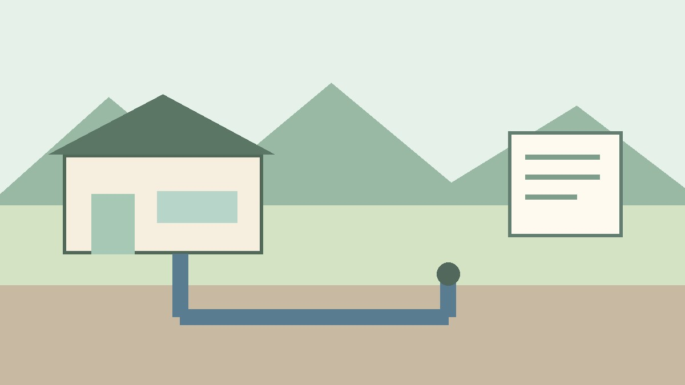
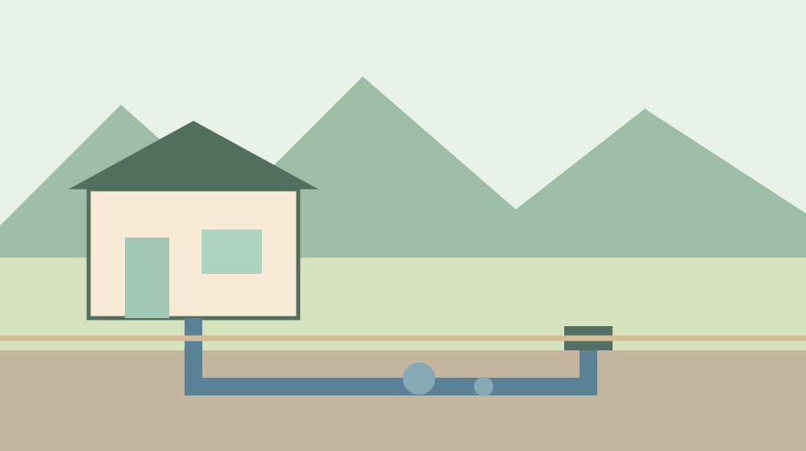
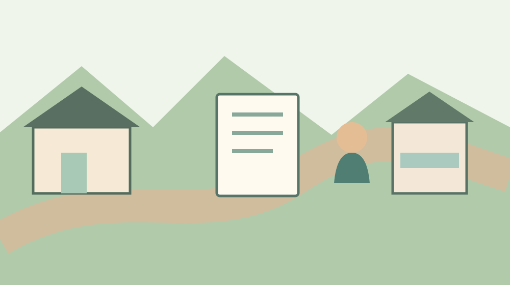

森町の下水道区域｜家の住所で確かめる
· 地区めぐり

Q. 森町の実家は、住所を見れば公共下水道が使えると分かる？
A. 森町の公表資料では、2025年4月1日現在、草ケ谷・森・天宮・城下地区内に供用開始区域があります。地区の全域が対象とは限りません。家の住所や敷地を用意し、町の上下水道課で供用状況を確認してください。
家の引き継ぎは、排水の行き先から
森町の家を引き継ぐとき、水道の蛇口が使えるかは目に入りやすい一方で、流した水がどこへ行くかは見えません。日々設備を維持してきた持ち主や、工事に協力してきた地域の方々の手間があって、今の暮らしが成り立っています。
私、大石浩之（磐田市／不動産業）は、家の設備を調べるとき、下水道という言葉だけで費用や工事の有無を決めないことが大切だと考えます。家族が役場へ一度問い合わせるために、まず住所と分かっている設備を一枚の紙に並べます。
地域の公共下水道が使える区域であることと、実家がすでに接続していることは別です。区域に入り、家の排水設備が公共ますにつながり、必要な届出が済んでいるかを、それぞれ確かめる必要があります。
4地区の「内」にある供用開始区域
森町の「森町公共下水道事業計画」は、2025年4月1日現在の供用開始区域を、草ケ谷、森、天宮、城下地区内の区域として掲載しています。町は、実際に供用開始している区域を窓口で確認するよう案内しています。
この書き方で注意したいのは「地区内」という部分です。4地区の名前が載っているからといって、各地区のすべての住所が対象だとは、この記載だけでは分かりません。隣接する家と同じ地区名であっても、自宅の状況を自分で確認します。
森町の資料では、公共下水道の一部地域での供用開始は2009年3月29日です。事業認可の第5期は2025年3月25日とされています。認可区域の計画と、特定の土地で使える供用開始区域は、同じ言葉として扱えません。
町が公開した計画一般図は調べる手がかりになります。ただ、画像上で境界が近く見える場所では、地図を拡大して自分で結論を出さず、対象の土地を窓口で照会します。町の下水道Q&Aも、区域の境目付近は窓口等での確認を案内しています。

区域と家の接続は別の確認
供用開始区域に家がある場合でも、宅内の排水設備がどの状態かは、家ごとに調べる必要があります。公共ますがどこにあるか、敷地内の管が接続されているか、既存設備の資料が残っているかを分けて整理します。
森町の「公共下水道を利用するには」は、台所や風呂、洗面所、洗濯機、トイレの汚水を公共ますへ流す管を排水設備と説明しています。排水設備は個人で設置・管理する設備とされています。道路の本管と同じ管理区分ではありません。
過去の図面や検査済証が見つかれば、窓口や指定工事店に見せるときの手がかりになります。資料がない場合も、それだけで未接続とは決まりません。誰が工事をしたのか、持ち主が持っている書類とともに確認します。
水道料金の通知は、上水道を使用していた事実を調べる手がかりにはなります。しかし、それだけで家の排水先を決めることはできません。上水道と排水設備を別の項目として扱うことから始めます。
問い合わせ前に用意するもの
森町の上下水道課下水道管理係への問い合わせでは、まず家の住所を正確に伝えられるようにします。町の案内に掲載されている電話番号は0538-85-6327です。確認する際は、最新の窓口情報も町の公式ページで見直してください。
住所の表記に迷う場合は、固定資産税の通知や住居表示を確認し、分かる範囲の地番や周辺地図も手元に置きます。住所と地番は異なる場合があります。書類を用意できないときの照会方法は、最初の電話で窓口に尋ねます。
地図で場所を説明する際は、建物だけでなく、敷地の形と接する道路が分かるものを用意すると、対象を取り違えにくくなります。ただし、資料を見せればその場で接続工事の可否まで決まるとは限りません。区域、公共ます、既存接続を別々に聞きます。
相談する人が持ち主本人でない場合は、所有者との関係や、どの範囲の情報を知りたいかを伝えます。個人情報や提出書類の扱いは窓口の案内に従います。家族だから必ずすべての情報を受け取れると決めつけません。
良い点：区域の入口と相談先が示されている
森町の公式ページは、供用開始区域が地区内のどこかにあることを公表し、個別の確認先を窓口として示しています。家族は、インターネットの地図だけで判断しようとせず、町の担当に直接確認できます。
供用が始まった後の接続についても、森町は公共ますと宅内の排水設備の役割を図と文章で説明しています。家の中の設備と町が管理する設備を分けて考える入口があり、工事店に何を聞くかを整理しやすくなります。
地域の工事は、道路の利用や生活に影響を受ける住民の協力を伴います。私は、すでに設備をつないだ持ち主の費用や、工事期間を支えた地域の負担も、数字だけでは見えない前提として受け止めたいと思います。
注文したい点：地区名だけでは費用まで分からない
私は、地区名を見つけて安心する前に、家の住所と工事の状態を一緒に確認する必要があると考えます。地区名だけで「すでに接続済み」や「追加費用はない」と受け取れば、引き継いだ後の段取りが変わってしまいます。
町の案内には計画面積約217ヘクタール、計画人口5,000人と、第5期事業認可区域の人口5,400人という別々の数字が記されています。対象とする計画の区分が異なるため、一つを現在の利用人口として置き換えることはできません。
工事が必要かどうか、公共ますがどこにあるか、宅内配管の延長や修繕が必要かは、このページだけでは分かりません。見積額も敷地や既存設備によって異なります。費用を未確認のまま、一定額と断定しないことが家計を守る第一歩です。
所有者が遠方に住んでいれば、窓口に問い合わせる人と現地を見られる人が別になることもあります。誰が平日の連絡を担当し、誰が書類を探すかを先に決めるだけでも、調査を進めやすくなります。

対案・結論：今日、住所を一つ確かめる
今日できる小さな一歩は、家の住所と持ち主の名前を書き、森町の下水道担当に「供用開始区域か」を聞くことです。答えをもらう際は確認した日、窓口の連絡先、対象とした土地を一緒に控えます。
区域内と分かったら、次に公共ますの位置と、家が接続済みかを確認します。窓口で分かることと、現地の点検が必要なことを分けて聞きます。区域外と分かったときも、現在の排水方法を別に把握します。
何を聞けばよいか迷う場合は、「この土地で使える状態ですか」「家の接続状況を確認するにはどの書類が要りますか」「費用や期限の確認先はどこですか」の順に尋ねます。答えをその場で記録し、分からなかった項目は空欄のまま持ち帰ります。
電話や窓口で図面が必要と言われたら、持参できる資料を確認してから用意します。登記事項、住所、古い図面のどれが必要かを、本人が先に推測する必要はありません。所有者本人以外が確認するときの手続きも、窓口で尋ねます。
工事と費用は見積もりを分ける
森町の案内では、供用開始後の排水設備設置と、水洗便所への改造について期限が示されています。排水設備設置は供用開始から1年以内、水洗便所への改造は3年以内と掲載されています。個別の建物にどう適用されるかは、供用開始日や現状を添えて町に確認します。
宅内の排水設備工事について、森町は町が指定した「排水設備指定工事店」でなければ施工できないと案内しています。指定の有無と対象工事を町の最新案内で確かめ、現地を見てもらってから見積書を受け取ります。
見積書では、管の設置、既存設備の撤去、舗装の復旧、点検や届出など、何が含まれるかを確かめます。敷地を掘る範囲や、別途必要になる作業が分からなければ、工事店に説明を求めます。契約を急ぐ前に、家族で内容を共有します。
森町の下水道Q&Aは受益者負担金について、公共ます1個につき20万円と説明しています。すでに納めたか、敷地にいくつのますがあるか、誰にどの扱いが適用されるかは個別に確認します。この金額を宅内工事費と混同してはいけません。
町のQ&Aには負担金の扱いに関する説明がありますが、個々の支払い状況までは示されません。持ち主の手元に通知や領収書があれば日付を控え、分からない場合は上下水道課に対象となる土地を示して確認します。
下水道の使用料も、工事費や負担金とは別の継続費用です。将来の利用量や家族構成によって費用は変わります。使う前に最新の算定方法と開始手続きを確かめ、月々の支払いと一度きりの費用を別の欄に記録します。
区域外の家で考えること
供用開始区域の外にある家については、まず現在どの設備で排水を処理しているかを確認します。区域外という回答だけで、浄化槽の有無や今後の工事予定まで分かるわけではありません。所有者の書類と現地の状態を調べます。
浄化槽がある場合は、維持管理に必要な点検や契約の状況を、保管している記録や関係先への問い合わせで確認します。放置してよい設備と決めつけず、使っていない期間も含めて何が必要かを担当先に尋ねます。
区域外にあるからといって、将来の供用開始時期を勝手に予想することもできません。計画図と実際に利用できる時期は別です。売却や改修の日程を決める前に、その土地の現在の状態と、町が回答できる範囲を聞きます。
上水道の仕組みについては、同じ森町でも蛇口に水が届く経路は一つではないで整理しています。水を受け取る経路と、汚水を処理する経路は別の項目として記録します。
誰も住まない家の上水道については、水道を止める前に再開条件を確認する記事も参照できます。上水道の廃止と下水道設備の確認を一つの手続きと決めず、担当にそれぞれ尋ねます。
家族に残す記録と大石の視点
実家を引き継ぐ家族には、住所・地番、所有者、上下水道の問い合わせ先、確認日、区域の回答、公共ますの位置、接続の資料を一枚にまとめておく方法があります。分からない欄を残しても、誰が次に調べるかを決めれば十分です。
工事を頼む場面では、森町の排水設備指定工事店についての記事も確認先になります。指定工事店の制度と個別の工事費は別なので、最新の指定状況と見積内容を改めて照合します。
私は、家の査定より前に、道路と名義に加え、排水の行き先を確認したいと考えます。家を使い続ける場合も、貸す場合も、売却を考える場合も、設備の状態は次の家族に引き継がれます。まだ売ると決めていない方にも使える確認です。
一方で、どの順番なら家族の負担が最も小さいかは、資料だけでは私にも決められません。現地に行ける人、書類を保管する人、費用を支払う人が異なるからです。答えを急がず、一つの住所の確認から始めてください。
相談先へ伝えるときの確認例
窓口への照会は、地区名を伝えるところで終わらせず、対象となる一筆や建物の場所まで確認します。家と離れた土地も所有している場合、すべてが同じ扱いとは限りません。家族が問い合わせる土地を一つずつ特定し、回答の対象をメモします。
家が複数の道路に接している場合は、公共ますの場所と、敷地内の配管経路を分けて確かめます。敷地の中の管が別の土地を通っているかどうかは、図面を見ただけで結論を出せない場合もあります。所有者間の権利関係は資料を整理し、必要に応じて専門家に相談します。
確認した内容は、他の家族にも日時とともに伝えます。口頭のやり取りを「接続工事が不要と決まった」と言い換えず、区域についての回答と設備の調査結果を分けて残します。次に現地を見る人が、未確認の部分を見落とさないためです。
よくある質問
草ケ谷・森・天宮・城下の全域が利用できますか？
森町が公表するのは、2025年4月1日現在の4地区内の供用開始区域です。地区全域が利用可能とは記載されていません。特定の家については、住所や敷地を示し、上下水道課の窓口で供用状況を確認してください。
供用開始区域なら家も接続済みですか？
供用開始区域であることと、各家の排水設備が公共ますにつながっていることは別です。過去の工事図面や通知、検査に関する書類を確認し、分からない場合は町や指定工事店に、接続状態を確かめる方法を尋ねてください。
工事の費用はいくらかかりますか？
宅内の工事費は、既存の管や公共ますの位置、必要な撤去・復旧作業などによって異なります。森町の指定工事店に現地を見てもらい、作業範囲が分かる見積書で確認してください。受益者負担金や継続的な使用料は別に整理します。
出典
- 森町：森町公共下水道事業計画（2026年10月確認）
- 森町：公共下水道を利用するには（2026年10月確認）
- 森町：下水道Q&A（2026年10月確認）
制度や費用は変わる場合があります。個別の手続きは森町の窓口に、権利関係は必要に応じ専門家に確認してください。